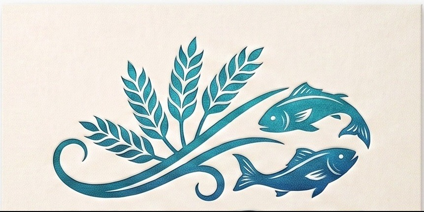

Five Loaves and Two Fishes
오병이어의 기적
이름에 담은 뜻
5L2F는 성경 속 "오병이어의 기적" — 보리떡 5개와 물고기 2마리로 수천 명이 배불리 먹었다는 이야기에서 따온 이름입니다. 작은 시작이라도 검증된 원칙을 붙들고 인내심을 갖고 꾸준히 쌓아가면, 어느 순간 상상보다 훨씬 큰 결과로 돌아온다는 믿음을 담았습니다. 경제적 자유도 다르지 않다고 생각합니다. 처음의 종잣돈은 보잘것없어 보여도, 시간과 원칙이 더해지면 기적 같은 결과를 만들어낼 수 있습니다.
제 이야기
15년 넘게 직장 생활을 하면서, 매달 시드를 모으는 일과 금융자산·부동산에 꾸준히 투자하는 일을 함께 병행해왔습니다. 화려한 한 방이 아니라, 오랜 시간 원칙을 지키며 쌓아온 결과로 순자산 30억원을 만들 수 있었습니다.
지금은 그보다 더 큰 목표를 보고 있습니다. 그 여정에서 그동안 쌓아온 경험과 지식, 그리고 시행착오에서 얻은 지혜를 나누고 싶었고, 동시에 저 스스로도 시장을 더 치열하게 공부하고 매일 들여다보는 습관을 유지하고 싶어서 이 사이트를 만들었습니다.
"누구나 부자가 될 수 있지만, 아무나 부자가 될 수는 없습니다."
부자가 되는 길은 누구에게나 열려 있습니다. 하지만 그 꿈을 실제로 이루는 소수가 되려면, 구체적인 목표를 세우고 꾸준히 실행하는 것 외에는 다른 방법이 없다고 생각합니다. 화려한 비법이 아니라 원칙과 시간이 만드는 결과를 믿습니다.
같이 부자가 됩시다. 꿈이 있는 여러분을 응원하겠습니다.